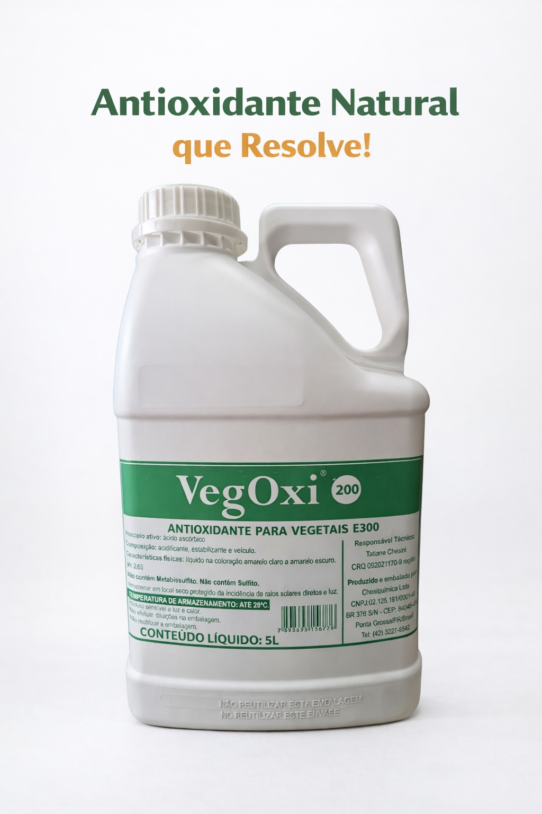
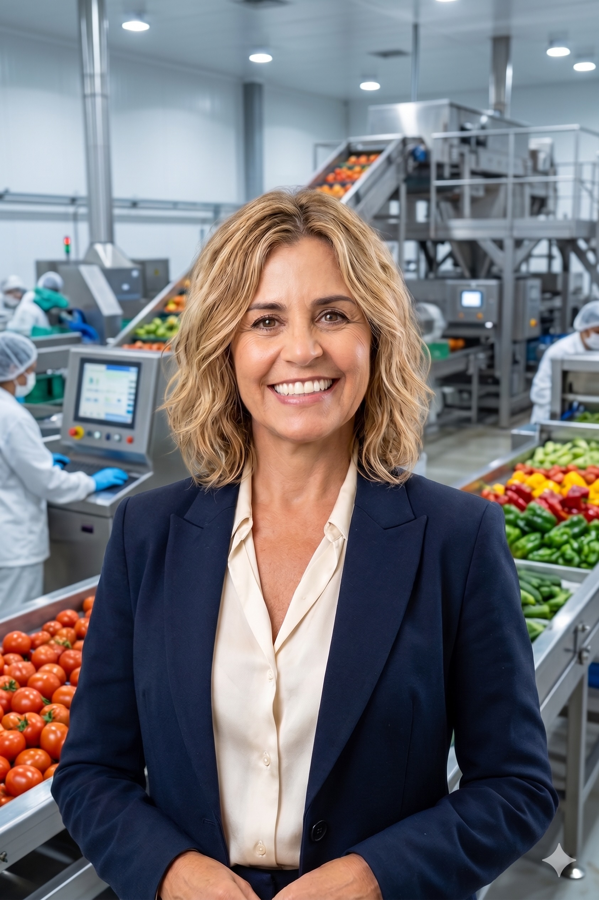
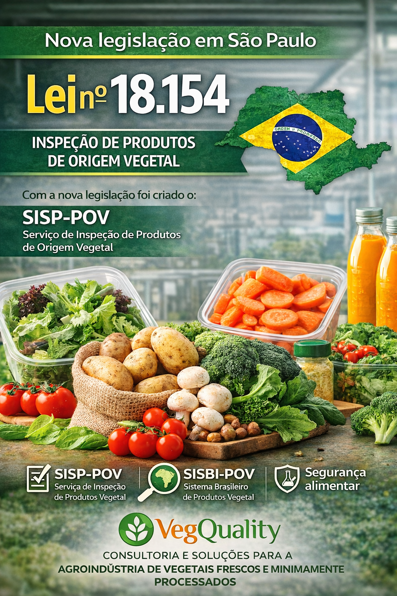
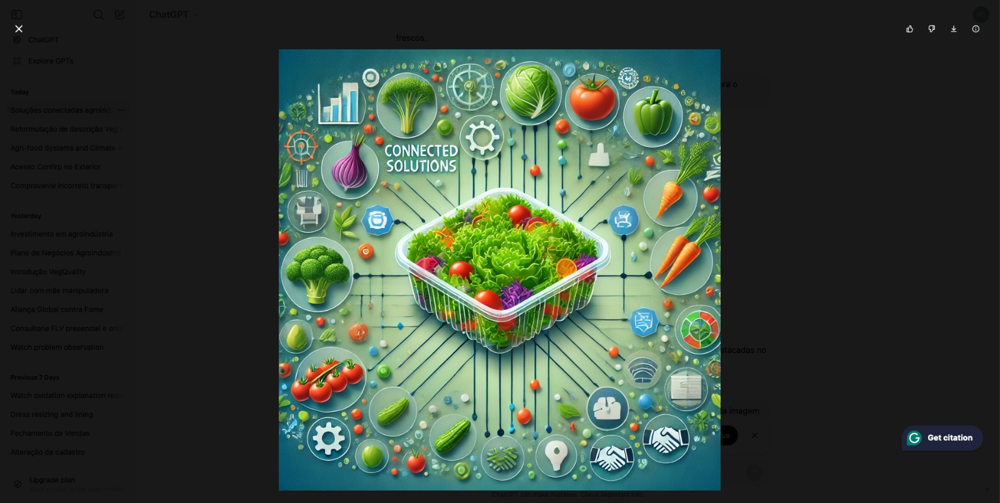

Consultoria que gera resultados na agroindústria de vegetais frescos
Soluções tecnológicas e biotecnologia de ponta para extensão de shelf-life e segurança dos alimentos na sua produção. Substitua aditivos químicos de forma segura.
100% Seguro
Rigores sanitários atendidos
Biotecnologia Pura
Alta durabilidade natural
Soluções completas para a agroindústria de vegetais frescos
Há mais de duas décadas, somos referência em consultoria e soluções para a cadeia produtiva de FLV (Frutas, Legumes e Verduras).
Consultoria
Diagnóstico operacional completo, extensão natural de shelf-life e aplicação de biotecnologia personalizada para eliminar perdas na sua produção de vegetais higienizados.
Saiba maisCapacitação
Treinamento especializado para equipes em Boas Práticas de Fabricação (BPF), controle sanitário e manipulação técnica, garantindo conformidade com as normas vigentes.
Saiba maisPlano de Negócios
Desenvolvimento estratégico comercial, viabilidade econômica de plantas de processamento e estruturação de novos canais de distribuição B2B.
Saiba maisVeg Oxi 200
Substituição tecnológica para sulfitos e metabissulfito de sódio. Antioxidante orgânico seguro e com excelente custo-benefício de apenas 1 centavo por hortaliça.
Saiba maisVeg Oxi 200 - Coadjuvante de tecnologia
Um Investimento que Vale a Pena!
Por Vegetal Fresco
Livre de Sulfitos (Seguro)Por Vegetal Oxidado
Com Metabissulfito (Tóxico)

Paixão que Gera Resultados!
Como transformar a ciência em uma aliada do campo e da mesa do consumidor?
Essa foi a pergunta que moveu a trajetória da Dra. Roseane Bob.
Nutricionista especialista em segurança de alimentos e sustentabilidade, Roseane sempre “mergulhou de cabeça” na rotina de produtores e agroindústrias. Nessas vivências, a dura realidade do desperdício e os desafios para o processamento de vegetais frescos no Brasil pós-colheita saltaram aos seus olhos, evidenciando um prejuízo gigantesco para toda a cadeia de hortifrúti.
A resposta para esse desafio veio em duas frentes complementares:
VegQuality
Uma consultoria prática, altamente especializada e financeiramente acessível, desenhada para levar soluções de eficiência e segurança do pequeno ao grande produtor.
Veg Oxi 200
Uma inovação exclusiva no mundo. Este coadjuvante de tecnologia reduz drasticamente as perdas de vegetais frescos processados prontos para o consumo e dispensa o uso de aditivos nocivos à saúde, tais como os sulfitos.
Com esse ecossistema de soluções, a Dra. Roseane e sua equipe de colaboradores e parceiros unem o crescimento sustentável de negócios agrícolas ao direito do consumidor de ter vegetais mais frescos, duráveis e seguros em casa.
Conheça maisFatos sobre o Veg Oxi 200
Veg Oxi 200
(Origem)
O Veg Oxi 200 nasceu de uma necessidade real identificada no dia a dia da Dra. Roseane Bob, através da consultoria prestada a produtores rurais que processavam vegetais. Essa imersão prática na realidade do campo foi a semente que transformou-se na VegQuality...
Saiba MaisComercialização
(VegQuality)
A gestão comercial, a distribuição e o suporte técnico estratégico do Veg Oxi 200 são realizados com exclusividade pela VegQuality. A história do produto está diretamente ligada à origem da nossa empresa, nascida a partir das necessidades no campo...
Saiba MaisProdução
(Chesquimica)
Para transformar a inovação científica da Dra. Roseane Bob em uma solução de alto padrão e escala para o mercado nacional, a produção e a industrialização do Veg Oxi 200 são realizadas pela Chemiquímica Ltda, localizada no Paraná...
Saiba MaisAcompanhe as tendências que estão moldando a agroindústria de vegetais frescos

SP endurece inspeção de vegetais processados
No último dia 10 de março de 2026, foi publicado o Decreto nº 70.447, que regulamenta a Lei nº 18.154/2025...
Leia Mais
Quem Planeja Escala, Lucra. Quem Improvisa, Perde.
Evite prejuízos na cadeia de hortifrúti. Estruturar processos operacionais de higienização de FLV com clareza...
Leia MaisTendências e Oportunidades para 2026
Novas biotecnologias e exigências do mercado para embalagens sustentáveis e eliminação de metabissulfito...
Leia Mais
Colheita de Grandes Resultados
Como a combinação de consultoria técnica customizada e o uso de antioxidantes eficientes geram colheitas lucrativas...
Leia MaisA maturidade e os desafios da agroindústria
A transição operacional de produtores tradicionais para agroindústrias modernas de processamento...
Leia MaisVeg Oxi 200: mais frescor e durabilidade
Descubra como o Veg Oxi 200 atua em nível molecular para reter a oxidação de morangos, batatas e alfaces...
Leia MaisDetalhes Adicionais
Ficha técnica
Conheça o Veg Oxi 200, o aliado que substitui os sulfitos, aumenta a produtividade, preserva o frescor e garante mais tempo de vida útil aos seus vegetais.
Baixe o PDFProtocolos de uso
Tem dúvidas sobre como aplicar o Veg Oxi 200? Confira nossos protocolos de uso e boas práticas para potencializar sua eficácia e garantir o máximo desempenho em seus vegetais.
Baixe o PDFCanais de Atendimento
Quero Adquirir em SP
Em São Paulo o tempo não para. Se você precisa do Veg Oxi 200 para ontem, é só clicar no botão abaixo!
Fale ConoscoNo sul de Minas
Quer seus vegetais prontos para o consumo, sem sulfitos e sempre fresquinhos em Minas Gerais? Conte com a nossa solução! 👉 Clique no botão abaixo e fale com a gente agora mesmo
Fale conoscoOutras Localidades
Está em outra região desse nosso país continental? Não tem problema! Nossa equipe está pronta para atender clientes em todo o Brasil. 👉 Clique no botão e fale com a gente!
Fale conoscoComo Distribuir?
🤝 É distribuidor e se interessou pelo antioxidante Veg Oxi 200? Clique no botão abaixo e fale diretamente com nossa equipe para saber todos os detalhes!
Fale conosco